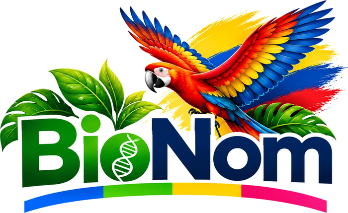

Material para la clase
Arme guías de 4 sesiones, talleres, evaluaciones tipo Saber 11, laberintos, crucigramas, ahorcados, sopas de letras, criptogramas genéticos, mapas conceptuales y casos del detective biológico, con las preguntas y palabras de BioNom. Todo con varias versiones para evitar la copia y con su clave.
Enlace del juego con este modelo para los estudiantes:
1 · Temas
2 · Contenido
Actividades dentro del documento
Las versiones traen otras preguntas o las mismas en otro orden, con las opciones barajadas. Con el mismo código salen siempre las mismas hojas, así puede volver a imprimirlas otro día.
3 · Encabezado
1 · Temas
Cada casilla es una pregunta corta del Juego de BioNom (selección múltiple o verdadero/falso).
2 · Hoja y versiones
Cada versión tiene ejercicios y ruta distintos. «Ejercicios hasta FIN» son las casillas que se resuelven en la ruta correcta; las demás son casillas trampa. La ruta solo avanza a la derecha, hacia abajo o en diagonal.
Volver a generar hojas de otro día
Escriba el código que aparece en la hoja de clave para obtener exactamente las mismas hojas.
